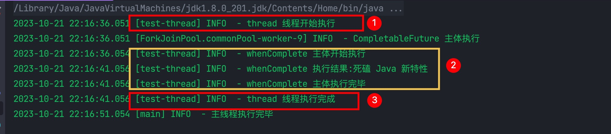
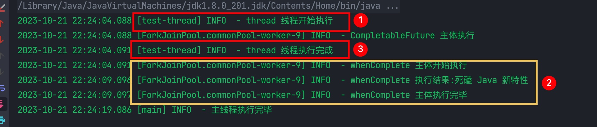
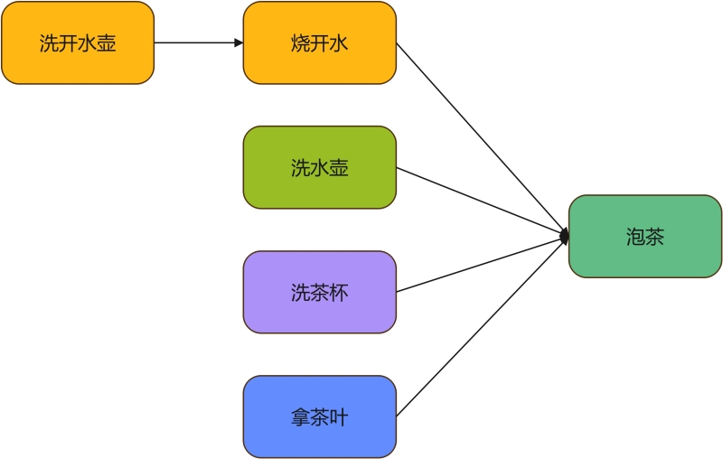
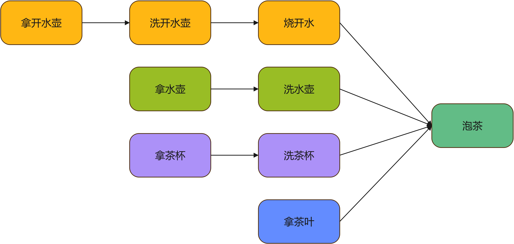
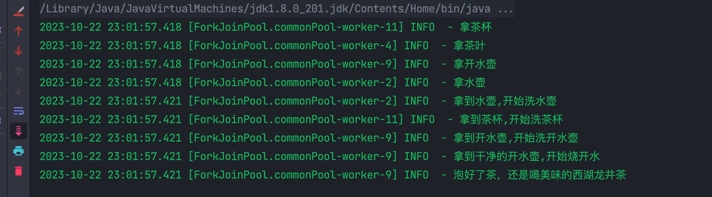

CompletableFuture是Java8中引入用于处理异步编程的核心类，它引入了一种基于Future的编程模型，允许我们以更加直观的方式执行异步操作，并处理它们的结果或异常。
通过Future我们能够知道异步执行的操作结果，它提供了isDone()来检测异步是否已经完成，也可以通过get()方法来获取计算结果。在异步计算中，Future确实是一个非常优秀的接口，但是它依然存在一些局限性：
缺乏回调机制：Future没有内置的回调机制，这就意味着我们必须轮询Future对象来检查任务是否完成，而不是等待通知。
无法取消任务：虽然可以通过cancel()方法来取消Future中的任务，但这并不保证任务会被取消。如果任务已经开始执行，那么cancel()方法可能无法终止任务的执行。
缺乏异常处理机制：Future通过get()方法返回任务的结果或异常，但它无法提供更多的异常处理功能。如果任务抛出异常，你必须在客户端代码中捕获这些异常。
单一结果：每个Future对象只能关联一个任务，这就限制了它的使用，如果我们需要并行执行多个任务并收集它们的结果，我们只能自己管理多个Future对象。
无法进行链式调用：如果我们希望在计算完成后执行特定操作，比如通知用户，这个时候我们就无法使用Future来实现了。
无法组合多任务：在处理多个任务时，Future并没有提供很好的组合方式，比如我们需要等待10任务全部完成后再执行特定操作，这个时候使用Future就不是很好操作了。
为了克服 Future 的局限性，Java 8 提供了 CompletableFuture，它构建在 Future 之上，提供了更加强大的异步编程功能，相比 Future 它具备如下优势：
提供了回调机制：CompletableFuture 提供了回调功能，我们可以注册回调函数来处理任务完成时的结果，而不必阻塞线程等待任务完成。这样可以提高并发性能，减少线程的阻塞时间。
提供了异常处理：CompletableFutur 具备丰富的异常处理机制，可以捕获任务执行中的异常，并允许我们定义自定义的异常处理策略。
能够取消任务：我们可以使用 cancel()取消任务的执行，同时还可以指定是否中断正在执行的任务。这提供了更好的任务控制能力。
强大的异步编程能力：CompletableFuture 提供了丰富的方法来处理异步操作，包括组合、转换、处理异常以及执行自定义的操作。这使得异步编程更加灵活，可以更轻松地实现复杂的异步任务组合。
支持组合、链式操作：CompletableFutur 提供了一系列支持组合操作的方法，例如 thenCombine() ， thenCompose()，thenApplyAsync()等等，使得多个 CompletableFuture 可以轻松组合成一个新的 CompletableFuture，从而更容易构建复杂的异步操作流。
CompletableFuture 提供了比传统 Future 更加强大、更加灵活的异步编程能力，能够更好地满足复杂异步任务处理的需求，能够更加方便地构建复杂的异步操作流，是 Java 8 及以后的版本中，处理异步操作的首选。
CompletableFuture 提供了多种方法用于构建异步操作。
runAsync()，用于异步执行没有返回值的任务。
有2个重载方法：
1public static CompletableFuture<Void> runAsync(Runnable runnable)2public static CompletableFuture<Void> runAsync(Runnable runnable, Executor executor)2者区别：
runAsync(Runnable runnable) 会使用 ForkJoinPool 作为它的线程池执行异步代码。
runAsync(Runnable runnable, Executor executor) 则是使用指定的线程池执行异步代码。
Demo
x1public void runAsyncTest(){3 CompletableFuture.runAsync(() ->{4 log.info("Java 新特性 - 01");5 });6
7 CompletableFuture.runAsync(() -> {8 log.info("Java 新特性 - 02");9 }, Executors.newFixedThreadPool(10));10} supplyAsync()用于异步执行有返回值的任务。
有2个重载方法：
21public static <U> CompletableFuture<U> supplyAsync(Supplier<U> supplier)2public static <U> CompletableFuture<U> supplyAsync(Supplier<U> supplier, Executor executor)Demo
151public void supplyAsyncTest() throws Exception {3 CompletableFuture<String> completableFuture1 = CompletableFuture.supplyAsync(() ->{4 log.info("Java 新特性 - 01");5 return "Java 新特性 - 01";6 });7
8 CompletableFuture<String> completableFuture2 = CompletableFuture.supplyAsync(() ->{9 log.info("Java 新特性 - 02");10 return "Java 新特性 - 02";11 },Executors.newFixedThreadPool(10));12
13 log.info(completableFuture1.get());14 log.info(completableFuture2.get());15} completedFuture()： 创建一个已完成的 CompletableFuture，它包含特定的结果。
91public void completedFutureTest() {3 CompletableFuture<String> completableFuture = CompletableFuture.completedFuture("Java Test");4 System.out.println(completableFuture.join());5}6
7// 结果......8Java Test9
注意：使用默认线程池会有一个问题：在主线程任务执行完以后，如果异步线程执行任务还没执行完，它会直接把异步任务线程清除掉，因为默认线程池中的都是守护线程 ForkJoinPool，当没有用户线程以后，会随着 JVM 一起清除。
121public void runAsyncTest(){3 CompletableFuture.runAsync(() ->{4 log.info("CompletableFuture 任务开始执行...");5 for (int i = 0; i < 100 ; i++) {6 log.info("CompletableFuture 任务执行中[{}]...",i);7 }8 log.info("CompletableFuture 任务执行完毕...");9 });10
11 log.info("主线程执行完毕...");12} CompletableFuture 提供了 get() 和 join() 方法用于我们获取计算结果：
41public T get() throws InterruptedException, ExecutionException2public T get(long timeout, TimeUnit unit) throws InterruptedException, ExecutionException, TimeoutException3
4public T join() get() 有两个重载方法：
get()：会阻塞当前线程，直到计算完成并返回结果
get(long timeout, TimeUnit unit)：有阻塞时间，如果在指定的超时时间内未能获取到结果，会抛出 TimeoutException 异常。
而 get() 和 join() 的区别则在于：
get() 会抛出 InterruptedException 和 ExecutionException 这两个受检查异常，我们必须显式地在代码中处理这些异常或将它们抛出。
join() 不会抛出受检查异常，所以在使用过程中代码会显得更加简洁，但是如果任务执行中发生异常，它会包装在 CompletionException 中，我们需要在后续代码中处理。
Demo
131public void completedFutureTest() {3 CompletableFuture<String> completableFuture = CompletableFuture.completedFuture("Java 就是牛");4
5 System.out.println(completableFuture.join());6
7 try {8 System.out.println(completableFuture.get());9 } catch (InterruptedException | ExecutionException e) {10 // 捕获异常并处理11 // 或者直接抛出12 }13}当 CompletableFuture 因为异步任务执行完成或者发生异常而完成时，我们可以执行特定的 Action，主要方法有：
51public CompletableFuture<T> whenComplete(BiConsumer<? super T,? super Throwable> action)2public CompletableFuture<T> whenCompleteAsync(BiConsumer<? super T,? super Throwable> action)3public CompletableFuture<T> whenCompleteAsync(BiConsumer<? super T,? super Throwable> action, Executor executor)4
5public CompletableFuture<T> exceptionally(Function<Throwable, ? extends T> fn) whenComplete(BiConsumer<? super T,? super Throwable> action)，接受一个 Consumer 参数，该参数接受计算的结果（如果成功）或异常（如果发生异常）并执行相应的操作。
161public void whenCompleteTest() {3 CompletableFuture<String> completableFuture1 = CompletableFuture.supplyAsync(() -> {4 log.info("[completableFuture-1] - Java Test..");5 6 return "[completableFuture-1] - Java Test";7 })8 // 完成时回调9 .whenComplete((res,ex) -> {10 if (ex == null) {11 System.out.println("结果是:" + res);12 } else {13 System.out.println("发生了异常，异常信息是:" + ex.getMessage());14 }15 });16}该方法是同步执行，回调函数是在触发它的 CompletableFuture 所在的线程中执行，且它会阻塞当前线程。比如我们是在 main 线程去调用它的，所以执行他的线程就是 main 线程，它会阻塞 mian 线程执行。如下：
441public class WhenCompleteTest {2 private static CompletableFuture<String> completableFuture;3
4 public static void main(String[] args) {5 completableFuture = CompletableFuture.supplyAsync(() ->{6 log.info("CompletableFuture 主体执行");7 return "死磕 Java 新特性";8 });9
10 // 启动子线程等待执行 11 Thread thread = new Thread(() ->{12 log.info("thread 线程开始执行");13
14 completableFuture.whenComplete((res,ex) -> {15 log.info("whenComplete 主体开始执行");16
17 sleep(5);18
19 if (ex == null) {20 log.info("whenComplete 执行结果:{}",res);21 } else {22 log.info("whenComplete 执行异常:{}",ex.getMessage());23 }24 log.info("whenComplete 主体执行完毕");25 });26
27 log.info("thread 线程执行完成");28 });29 thread.setName("test-thread");30 thread.start();31
32 // 阻塞主线程33 sleep(15);34 log.info("主线程执行完毕");35 }36
37 public static void sleep(long sleep) {38 try {39 TimeUnit.SECONDS.sleep(sleep);40 } catch (InterruptedException e) {41 throw new RuntimeException(e);42 }43 }44}结果

首先
test-thread线程先执行，打印 “thread 线程开始执行”然后调用
future.whenComplete()，这个时候我们看到执行的线程也是test-thread，在这里面它等待了 5 秒5 秒过后再次打印 “thread 线程执行完成”
从执行结果中可以看出 whenComplete() 就是由调用它的线程来执行，且会阻塞当前线程。
whenCompleteAsync(BiConsumer<? super T,? super Throwable> action)，异步执行，回调函数会在默认的 ForkJoinPool 的线程中执行，但是它不会阻塞当前线程。我们将上面例子的 whenComplete() 改成 whenCompleteAsync()，执行结果如下：

whenCompleteAsync()方法的执行线程是ForkJoinPool.commonPool-worker-9没有阻塞
test-tread线程的执行
whenCompleteAsync(BiConsumer<? super T,? super Throwable> action, Executor executor)，跟上边一样只是指定了一个自定义的线程池。
131public void whenCompleteTest() {3 CompletableFuture<String> completableFuture3 = CompletableFuture.supplyAsync(() -> {4 log.info("[completableFuture-3] -Java Test");5 return "[completableFuture-2] - 死磕 Java 新特性";6 }).whenCompleteAsync((res,ex) -> {7 if (ex == null) {8 log.info("结果是:{}",res);9 } else {10 log.warn("发生了异常，异常信息是:{}",ex.getMessage());11 }12 },Executors.newFixedThreadPool(4));13} exceptionally(Function<Throwable, ? extends T> fn)，exceptionally() 用于处理异步操作中的异常情况，当异步操作发生异常时，该回调函数将会被执行，我们可以在该回调函数中处理异常情况。exceptionally() 返回一个新的 CompletableFuture 对象，其中包含了异常处理的结果或者异常对象。
201public void exceptionallyTest() {3 CompletableFuture<String> future = CompletableFuture.supplyAsync(() -> {4 int i = 10 / 0;5 return "Java 异常 Test";6 });7
8 CompletableFuture<String> resultFuture = future.exceptionally((ex) -> {9 log.info("发生了异常:{}",ex.getMessage());10 return "Java 异常成功 Test";11 });12
13 try {14 // 由于 future 抛了异常，所以调用 future.join() 会报错，我们需要 try...catch 处理下 。15 System.out.println(future.join());16 } catch (Exception ex) {17 log.error("异常:{}",ex.getMessage());18 }19 System.out.println(resultFuture.join());20}结果转换，就是将上一段任务的执行结果作为下一阶段任务的入参参与重新计算，产生新的结果。
thenApply() 和 thenApplyAsync()： 用于将一个 CompletableFuture 的结果应用于一个函数，并返回一个新的 CompletableFuture，表示转换后的结果。
171public void thenApplyTest() {3 CompletableFuture<String> completableFuture = CompletableFuture.supplyAsync(() -> {4 log.info("执行第一步...");5 return "Java";6 }).thenApply(s -> {7 log.info("执行第二步,第一步返回结果:{}",s);8 return s + " Test..";9 });10
11 log.info("结果为:{}",completableFuture.join());12}13
14 // 结果......152023-10-22 15:28:26.882 [ForkJoinPool.commonPool-worker-9] INFO - 执行第一步...162023-10-22 15:28:26.888 [ForkJoinPool.commonPool-worker-9] INFO - 执行第二步,第一步返回结果:Java172023-10-22 15:28:26.888 [main] INFO - 结果为:Java Test... thenCompose() 和 thenComposeAsync() ：它用于将一个 CompletableFuture 的结果应用于一个函数，该函数返回一个新的 CompletableFuture。
141public void thenComposeTest() {3 CompletableFuture<String> completableFuture = CompletableFuture.supplyAsync(() -> {4 log.info("执行第一步...");5 return "Java";6 7 }).thenCompose((s) -> {8 log.info("执行第二步,第一步返回结果:{}",s);9 // 注意这里跟 thenApply() 的差异10 return CompletableFuture.supplyAsync(() -> s + " Test..");11 });12
13 log.info("结果为:{}",completableFuture.join());14} thenCompose() 与 thenApply() 两者的返回值虽然都是新的 CompletableFuture，但是 thenApply() 由于它的函数的返回值仅仅只是结果，所以它通常用于对异步操作的结果进行简单的转换，而 thenCompose() 则允许我们链式地组合多个异步操作。虽然两者都有可能实现相同的效果（比如上面例子），但是他们的使用场景和意义还是有区别的。
结果消费则是只对结果执行 Action，而不返回新的计算值。
thenAccept()：用于处理异步操作的结果，但不返回任何结果。 接受一个 Consumer 函数接口。
151public void thenAcceptTest() throws InterruptedException {3 CompletableFuture<String> completableFuture = CompletableFuture.supplyAsync(() ->{4 return "Java 新特性";5 });6
7 completableFuture.thenAccept(s ->{8 System.out.println("CompletableFuture 计算结果是:" + s);9 });10
11 TimeUnit.SECONDS.sleep(5);12}13
14// 结果......15CompletableFuture 计算结果是:Java 新特性 thenAcceptBoth()：用于处理两个不同的 CompletableFuture 异步操作的结果，并执行操作，但不返回新的结果。
方法定义如下：
21public CompletableFuture<Void> thenAcceptBoth(CompletableFuture<? extends U> other, 2 BiConsumer<? super T, ? super U> action);other：为另外一个 CompletableFuture，它包含了另一个异步操作的结果。
action：类型为 BiConsumer，它接受两个参数，分别表示第一个 CompletableFuture 的结果和第二个 CompletableFuture 的结果。
161 2 public void thenAcceptBothTest() throws InterruptedException {3 CompletableFuture<String> future1 = CompletableFuture.completedFuture("Java");4 CompletableFuture<String> future2 = CompletableFuture.completedFuture("新特性");5
6 future1.thenAcceptBoth(future2,(result1,result2) -> {7 System.out.println("future1 的结果是：" + result1);8 System.out.println("future2 的结果是：" + result2);9 });10
11 TimeUnit.SECONDS.sleep(5);12 }13
14// 结果......15future1 的结果是：Java16future2 的结果是：新特性 thenRun()：用于在一个 CompletableFuture 异步操作完成后执行操作，而不关注计算的结果。通常用于执行其他作用的操作、清理工作、或在异步操作完成后触发其他操作。
101public void thenRunTest() throws InterruptedException {3 CompletableFuture<String> future = CompletableFuture.completedFuture("Java 新特性");4 5 future.thenRun(() ->{6 System.out.println("CompletableFuture 计算执行完成，开始执行后续操作...");7 });8
9 TimeUnit.SECONDS.sleep(5);10} thenCombine() 用于将两个不同的 CompletableFuture 异步操作的结果合并为一个新的结果，并执行操作。该方法允许我们在两个异步操作都完成后执行一个操作，它接受两个结果作为参数，并返回一个新的结果。
方法定义如下：
11public <U, V> CompletableFuture<V> thenCombine(CompletableFuture<? extends U> other, BiFunction<? super T, ? super U, ? extends V> action);other：表示另外一个 CompletableFuture，它包含了该 CompletableFuture 的计算结果
action：类型是 BiFunction，它接受两个参数，分别是第一个 CompletableFuture 的计算结果和第二个 CompletableFuture 的计算结果。
181public void thenCombineTest() {3 CompletableFuture<String> future1 = CompletableFuture.completedFuture("Java");4 CompletableFuture<String> future2 = CompletableFuture.completedFuture("新特性");5
6 CompletableFuture<String> combineFuture = future1.thenCombine(future2,(result1,result2) ->{7 System.out.println("future1 的结果是：" + result1);8 System.out.println("future2 的结果是：" + result2);9 return result1 + result2 + " 就是牛...";10 });11
12 System.out.println(combineFuture.join());13}14
15// 结果...... 16future1 的结果是：Java17future2 的结果是：新特性18Java新特性就是牛... applyToEither() 用于处理两个不同的 CompletableFuture 异异步操作中的任何一个完成后，将其结果应用于一个函数，并返回一个新的 CompletableFuture 表示该函数的输出结果。该方法允许我们在两个异步操作中的任何一个完成时执行操作，而不需要等待它们都完成。
161public void applyToEitherTest() {3 CompletableFuture<String> future1 = CompletableFuture.completedFuture("Java");4 CompletableFuture<String> future2 = CompletableFuture.completedFuture("新特性");5
6 CompletableFuture<String> eitherFuture = future1.applyToEither(future2,res ->{7 System.out.println("接受的结果是:" + res);8 return "eitherFuture 接受的结果是:" +res;9 });10
11 System.out.println(eitherFuture.join());12}13
14// 结果.....15接受的结果是:Java16eitherFuture 接受的结果是:Java acceptEither() 与 applyToEither() 一样，也是等待两个 CompletableFuture 中的任意一个执行完成后执行操作，但是它不返回结果。
141public void acceptEitherTest() {3 CompletableFuture<String> future1 = CompletableFuture.completedFuture("Java");4 CompletableFuture<String> future2 = CompletableFuture.completedFuture("新特性");5
6 CompletableFuture<Void> eitherFuture = future1.acceptEither(future2,res ->{7 System.out.println("接受的结果是:" + res);8 });9
10 eitherFuture.join();11}12
13// 结果......14接受的结果是:Java runAfterEither()用于在两个不同的 CompletableFuture 异步操作中的任何一个完成后执行操作，而不依赖操作的结果。这个方法通常用于在两个异步操作中的任何一个成功完成时触发清理操作或执行某些操作，而不需要返回值。
81public void runAfterEitherTest() {3 CompletableFuture<String> future1 = CompletableFuture.completedFuture("Java");4 CompletableFuture<String> future2 = CompletableFuture.completedFuture("新特性");5 future1.runAfterEither(future2,() ->{6 System.out.println("已经有一个任务完成了...");7 });8} runAfterBoth() 用于在两个不同的 CompletableFuture 异步操作都完成后执行操作，而不依赖操作的结果。这个方法通常用于在两个异步操作都完成时触发某些操作或清理工作，而不需要返回值。
91public void runAfterBothTest() {3 CompletableFuture<String> future1 = CompletableFuture.completedFuture("Java");4 CompletableFuture<String> future2 = CompletableFuture.completedFuture("新特性");5 6 future1.runAfterBoth(future2,() ->{7 System.out.println("future1 和 future2 两个异步任务都完成了...");8 });9} anyOf() 是用于处理多个 CompletableFuture 对象的静态方法，它允许我们等待多个异步操作中的任何一个完成，并执行相应的操作。它类似于多个异步操作的并发执行，只要有一个操作完成，它就会返回一个新的 CompletableFuture 对象，表示第一个完成的操作。
anyOf() 是一个可变参数，我们可以传入任意数量的 CompletableFuture 对象。
401public void anyOfTest() {3 CompletableFuture<String> future1 = CompletableFuture.supplyAsync(() ->{4 sleep(1);5 log.info("Java1...");6 return "Java1";7 });8
9 CompletableFuture<String> future2 = CompletableFuture.supplyAsync(() ->{10 sleep(2);11 log.info("Java2...");12 return "Java2";13 });14
15 CompletableFuture<String> future3 = CompletableFuture.supplyAsync(() ->{16 sleep(3);17 log.info("Java3...");18 return "Java3";19 });20
21 CompletableFuture<String> future4 = CompletableFuture.supplyAsync(() ->{22 sleep(4);23 log.info("Java4...");24 return "Java4";25 });26
27 CompletableFuture<String> future5 = CompletableFuture.supplyAsync(() ->{28 sleep(5);29 log.info("Java5...");30 return "Java5";31 });32
33 CompletableFuture<Object> anyOfFuture = CompletableFuture34 .anyOf(future1,future2,future3,future4,future5);35 anyOfFuture.thenAccept(result -> {36 log.info("接收到的结果为:" + result);37 }); 38
39 sleep(10);40} anyOf() 比较有用，当我们需要并行执行多个异步操作，并在其中任何一个完成时执行操作时，就可以使用它。
allOf用法和anyOf一样，只不过是等待所有都完成了才会完成。
著名数学家华罗庚先生在《统筹方法》这篇文章里介绍了一个烧水泡茶的例子，最优解如下：

但是我们为了能够更好地验证 CompletableFuture 的任务编排功能，我们将其进行扩展：

521public class Tea {2 public static void main(String[] args) throws InterruptedException {3 CompletableFuture<String> future1 = CompletableFuture.supplyAsync(()->{4 log.info("拿开水壶");5 return "开水壶";6 });7
8 CompletableFuture<String> future2 = CompletableFuture.supplyAsync(() -> {9 log.info("拿水壶");10 return "水壶";11 });12
13 CompletableFuture<String> future3 = CompletableFuture.supplyAsync(() ->{14 log.info("拿茶杯");15 return "茶杯";16 });17
18 CompletableFuture<String> future4 = CompletableFuture.supplyAsync(() -> {19 log.info("拿茶叶");20 return "西湖龙井";21 });22
23 CompletableFuture<String> future11 = future1.thenApply((result) -> {24 log.info("拿到" + result + ",开始洗" + result);25 return "干净的开水壶";26 });27
28 CompletableFuture<String> future12 = future11.thenApply((result) -> {29 log.info("拿到" + result + ",开始烧开水");30 return "烧开水了";31 });32
33 CompletableFuture<String> future21 = future2.thenApply((result) -> {34 log.info("拿到" + result + ",开始洗" + result);35 return "干净的水壶";36 });37
38 CompletableFuture<String> future31 = future3.thenApply((result) -> {39 log.info("拿到" + result + ",开始洗" + result);40 return "干净的茶杯";41 });42
43
44 CompletableFuture<Void> future5 = CompletableFuture45 .allOf(future4,future12,future21,future31);46 future5.thenRun(() -> {47 log.info("泡好了茶，还是喝美味的西湖龙井茶");48 });49
50 TimeUnit.SECONDS.sleep(5);51 }52}
11CompletableFuture的 API 比较多，不同的方法有不同的使用场景，大明哥也不可能将所有的 API 都介绍和举一个示例，就简单列一个表格吧。
构建异步操作
| 方法 | 说明 | 有无返回值 |
|---|---|---|
runAsync | 异步执行任务，默认 ForkJoinPool 线程池 | 无返回值 |
supplyAsync | 异步执行任务，默认 ForkJoinPool 线程池 | 有返回值 |
completedFuture | 创建一个已经完成的 CompletableFuture 对象 | 有返回值 |
两个线程依次执行
| 方法 | 说明 | 有无返回值 |
|---|---|---|
thenApply | 获取前一个线程的执行结果，第二个线程处理该结果，生成一个新的 CompletableFuture 对象 | 有返回值 |
thenAccept | 获取前一个线程的执行结果，第二个线程消费结果，不会返还给调用端 | 无返回值 |
thenRun | 第一个线程执行完后，再执行，它忽略第一个线程的执行结果，也不返回结果 | 无返回值 |
thenCompose | 获取前一个线程的执行结果，对其进行组合，返回新的 CompletableFuture 对象 | 有返回值 |
whenComplete | 获取前一个线程的结果或异常，消费 | 不影响上一线程返回值 |
exceptionally | 线程异常执行，配合whenComplete 使用 | 有返回值 |
handle | 相当于whenComplete + exceptionally | 有返回值 |
等待2个线程都执行完
| 方法 | 说明 | 有无返回值 |
|---|---|---|
thenCombine | 2个线程都要有返回值，等待都结束，结果合并转换 | 有返回值 |
thenAcceptBoth | 2个线程都要有返回值，等待都结束，结果合并消费 | 无返回值 |
runAfterBoth | 2个线程无需要有返回值，等待都结束，执行其他逻辑 | 无返回值 |
等待2个线程任一执行完
| 方法 | 说明 | 有无返回值 |
|---|---|---|
applyToEither | 2个线程都要有返回值，等待任一结束，转换其结果 | 有返回值 |
acceptEither | 2个线程都要有返回值，等待任一结束，消费其结果 | 无返回值 |
runAfterEither | 2个线程无需有返回值，等待任一结束，执行其他逻辑 | 无返回值 |
多个线程等待
| 方法 | 说明 | 有无返回值 |
|---|---|---|
anyOf | 多个线程任一执行完返回 | 有返回值 |
allOf | 多个线程全部执行完返回 | 无返回值 |